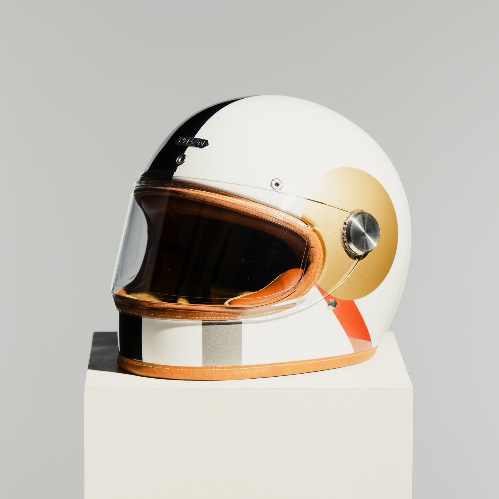
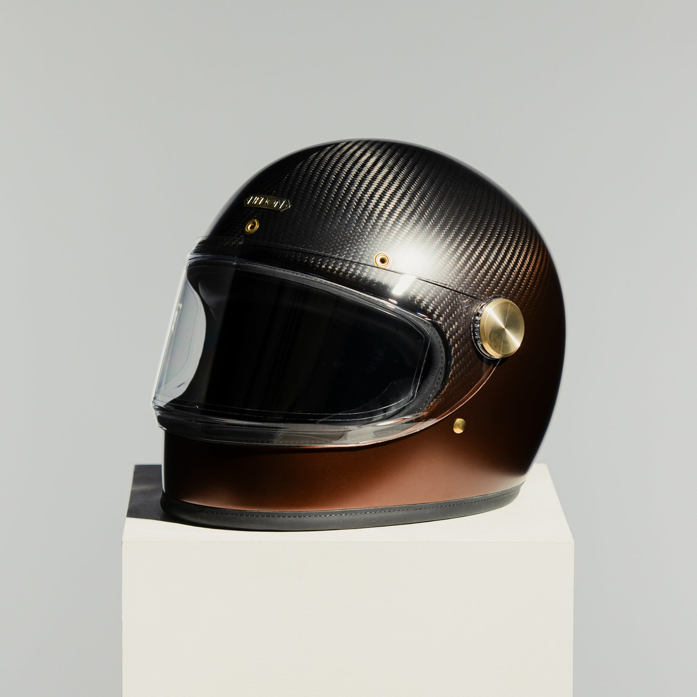

How to choose a retro helmet that looks right and protects properly

A retro helmet should suit the bike and the rider, and it should be certified to the current standard. This short checklist covers both.
Start with certification
Look for ECE 22.06 on the label. SHARP explains why a helmet matters and how to read the rating.
Choose the shape you love. Then check the label.
Fit before finish
- The helmet should feel snug and even, with no pressure points.
- Check the cheek pads and the way the shell sits on your head.
- Only then choose the colour and finish.
Three retro options



| Check | What to look for |
|---|---|
| Standard | ECE 22.06 on the label |
| Fit | Snug, even, no pressure points |
| Finish | Hand-finished, quiet and durable |
| Range | See the vintage motorcycle helmets collection and our vintage helmet guide |
Explore Hedon luxury motorcycle helmets. Back to the Hedon home page.